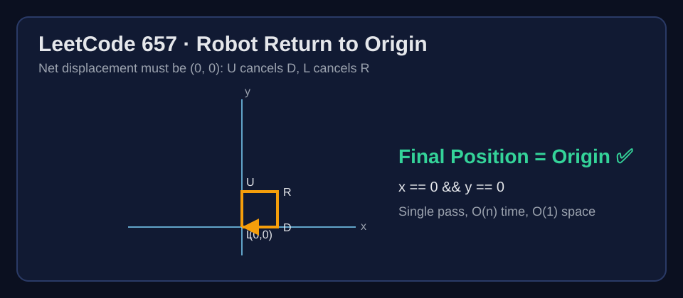

LeetCode 657: Robot Return to Origin (2D Displacement Cancellation)
LeetCode 657StringSimulationVector ThinkingToday we solve LeetCode 657 - Robot Return to Origin.
Source: https://leetcode.com/problems/robot-return-to-origin/

English
Problem Summary
You are given a move string where each character is one step: 'U', 'D', 'L', or 'R'. Starting at (0,0), return true if the robot ends at the origin after all moves.
Key Insight
Only net displacement matters. Vertical moves cancel when U == D, and horizontal moves cancel when L == R. Equivalent implementation: track coordinates x and y, then check x == 0 && y == 0.
Brute Force and Limitations
Brute-force simulation with an explicit grid path is unnecessary. We never need the full path history, only the final displacement.
Optimal Algorithm Steps
1) Initialize x = 0, y = 0.
2) Scan each move char:
- U: y++
- D: y--
- L: x--
- R: x++
3) Return x == 0 && y == 0.
Complexity Analysis
Time: O(n).
Space: O(1).
Common Pitfalls
- Mixing up axis directions (e.g., L should decrement x).
- Trying to store every visited point when only the final coordinate matters.
- Using absolute counts incorrectly without considering direction.
Reference Implementations (Java / Go / C++ / Python / JavaScript)
class Solution {
public boolean judgeCircle(String moves) {
int x = 0, y = 0;
for (int i = 0; i < moves.length(); i++) {
char c = moves.charAt(i);
if (c == 'U') y++;
else if (c == 'D') y--;
else if (c == 'L') x--;
else if (c == 'R') x++;
}
return x == 0 && y == 0;
}
}func judgeCircle(moves string) bool {
x, y := 0, 0
for i := 0; i < len(moves); i++ {
switch moves[i] {
case 'U':
y++
case 'D':
y--
case 'L':
x--
case 'R':
x++
}
}
return x == 0 && y == 0
}class Solution {
public:
bool judgeCircle(string moves) {
int x = 0, y = 0;
for (char c : moves) {
if (c == 'U') y++;
else if (c == 'D') y--;
else if (c == 'L') x--;
else if (c == 'R') x++;
}
return x == 0 && y == 0;
}
};class Solution:
def judgeCircle(self, moves: str) -> bool:
x = 0
y = 0
for c in moves:
if c == 'U':
y += 1
elif c == 'D':
y -= 1
elif c == 'L':
x -= 1
elif c == 'R':
x += 1
return x == 0 and y == 0var judgeCircle = function(moves) {
let x = 0, y = 0;
for (const c of moves) {
if (c === 'U') y++;
else if (c === 'D') y--;
else if (c === 'L') x--;
else if (c === 'R') x++;
}
return x === 0 && y === 0;
};中文
题目概述
给你一个移动字符串，每个字符表示一步：'U'、'D'、'L'、'R'。机器人从 (0,0) 出发，执行完全部移动后若回到原点则返回 true。
核心思路
关键只看“净位移”。上下抵消（U 与 D），左右抵消（L 与 R）。实现上直接维护坐标 x, y，最后判断是否都为 0 即可。
暴力解法与不足
可以把整条路径都记录下来，但这会浪费空间。题目只关心终点，不关心中间经过哪些点。
最优算法步骤
1）初始化 x = 0、y = 0。
2）遍历每个字符：
- U：y++
- D：y--
- L：x--
- R：x++
3）最后返回 x == 0 && y == 0。
复杂度分析
时间复杂度：O(n)。
空间复杂度：O(1)。
常见陷阱
- 坐标方向写反（例如把 L 写成 x++）。
- 不必要地存整条路径。
- 只统计数量但未正确处理方向增减。
多语言参考实现（Java / Go / C++ / Python / JavaScript）
class Solution {
public boolean judgeCircle(String moves) {
int x = 0, y = 0;
for (int i = 0; i < moves.length(); i++) {
char c = moves.charAt(i);
if (c == 'U') y++;
else if (c == 'D') y--;
else if (c == 'L') x--;
else if (c == 'R') x++;
}
return x == 0 && y == 0;
}
}func judgeCircle(moves string) bool {
x, y := 0, 0
for i := 0; i < len(moves); i++ {
switch moves[i] {
case 'U':
y++
case 'D':
y--
case 'L':
x--
case 'R':
x++
}
}
return x == 0 && y == 0
}class Solution {
public:
bool judgeCircle(string moves) {
int x = 0, y = 0;
for (char c : moves) {
if (c == 'U') y++;
else if (c == 'D') y--;
else if (c == 'L') x--;
else if (c == 'R') x++;
}
return x == 0 && y == 0;
}
};class Solution:
def judgeCircle(self, moves: str) -> bool:
x = 0
y = 0
for c in moves:
if c == 'U':
y += 1
elif c == 'D':
y -= 1
elif c == 'L':
x -= 1
elif c == 'R':
x += 1
return x == 0 and y == 0var judgeCircle = function(moves) {
let x = 0, y = 0;
for (const c of moves) {
if (c === 'U') y++;
else if (c === 'D') y--;
else if (c === 'L') x--;
else if (c === 'R') x++;
}
return x === 0 && y === 0;
};
Comments